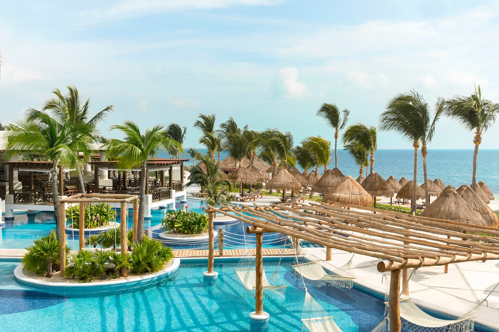
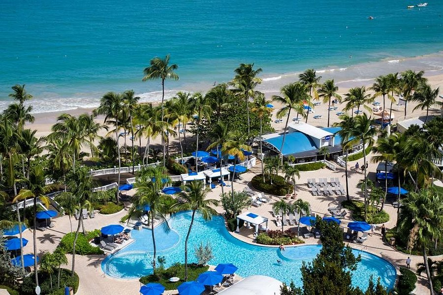
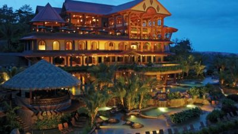

About Us
The Pacific Trails Resort Family We opened our doors for the first time in April 1995 and since then we have had great success and that is thanks to the quality of care we provide to our guests, along with the high quality of service we provide. From our humble beginning we have always focused on providing the best experience and we make sure that our guests leave with the best memories of an unforgettable vacation We are a small chain of resorts and hotels, with several locations in different parts of the world including Mexico, Costa Rica, Puerto Rico.
The Pacific Trails Resort staff is always ready to take care of your needs during your visit, and we'll make every effort possible to accomodate any special need, please contact us in advance in order to request any special assistance, our facilities are equipted to provide comfort to a range of guests with or without special needs, trust us with your vacations, you will not be disappointed!
Our commitment to our guests has always been our most important responsibility, and the acceptance we have had during all these years shows that we have done our work satisfactorily. We want to tell you that feel free to contact us with any questions or concerns.
Thank you for visiting our pages and we hope to see you soon at one of our resorts!
Mexico
Puerto Rico
Costa Rica
Pacific Trails Resort
12010 Pacific Trails Road
Zephyr, CA 95555
888-555-5555